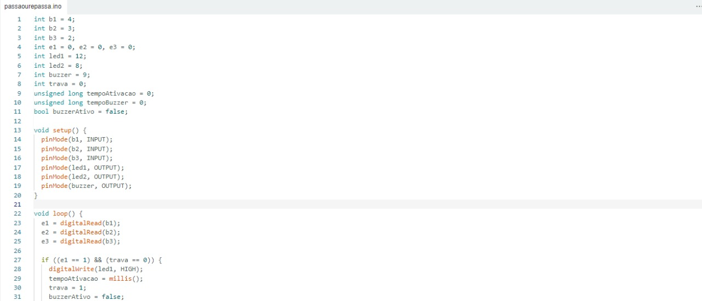
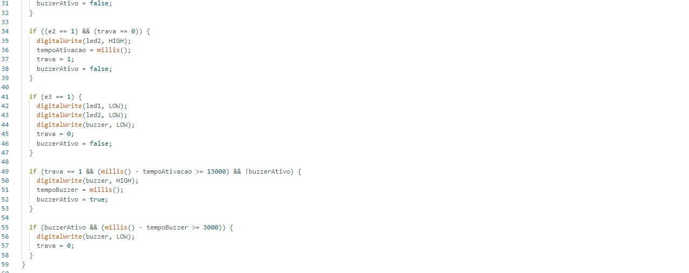

Esse projeto envolve o uso de LEDs, botões, resistores, um buzzer e uma protoboard, com o objetivo de criar um sistema onde apenas um botão pode ser ativado por vez, sob controle de um mediador. Durante a ativação, um contador de 13 segundos é iniciado, e um aviso sonoro é emitido para indicar o término do tempo.
Criar um sistema interativo com Arduino onde:
Testar o Circuito no Tinkercad Antes de montar fisicamente, recomendamos usar o Tinkercad para simular o funcionamento do circuito:
Conectar o Arduino na Protoboard
Conectar os LEDs
Conectar os Botões
Ajustes Finais
Conectar o Buzzer
Código em C++ :
  Acesse o repositório no githubTestar o Circuito